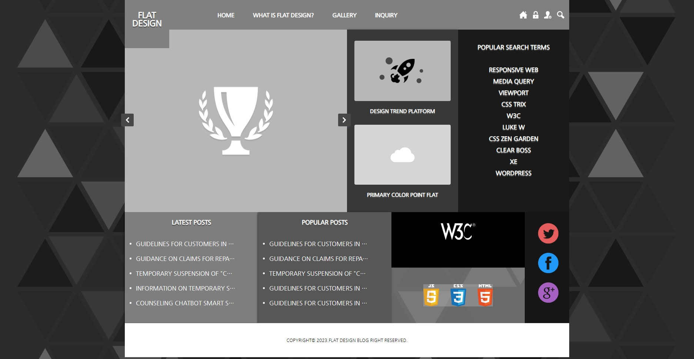

flat design
Flat design seeks flatness. It is not known exactly when flat design started, but it is clear that it is a design trend that has been passed down for a long time. Of course, there is a person who made flat design a trend. That's Microsoft's Windows 8 UI. Microsoft is the one who made flat design a popular design flow by announcing an unconventional flat UI in Windows 8. As a result, Apple's iOS7 adopts flat design, and flat design is solidifying its position.

How to use text
Introducing how to do flat design using text. When doing flat design using text, the choice of font is important first. Depending on the design, the font should be selected considering the line and thickness of the font. A message can be effectively conveyed only by selecting an appropriate font and adjusting the size of the text, and flat design can stand out.

how to use pictures
Introducing how to do flat design using pictures. When doing flat design with pictures, it is good to set the background to an image. The image set as the entire background makes the flat design stand out more, and you can see the maximum effect when used in places such as promotions and one-page sites.

How to use icons
Introducing how to do flat design using icons. When designing a flat design using icons, the selection of icons is important. Depending on your design, some icons may need thick lines, while others may need thin lines. Choosing them well is the best way to achieve flat design with icons.
The Future of Flat Design
플랫 디자인의 미래는 누구도 알 수 없지만, 감히 말하자면 플랫 디자인은 다른 디자인 흐름보다 오래 갈 것이라는 겁니다. 이제는 스큐어 모피즘 디자인 개념을 벗어나 확장성이 뛰어나고 심플하고 직관적인 플랫 디자인을 사용자 또한 선호 할 것입니다.
Flat design of the future is unknown, but no one dare to say Flat design that will take longer than other design flow. Now that's out of the concept of cure fur minimalist design scalable Flat design, simple and intuitive user you will also like.